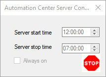
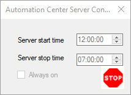
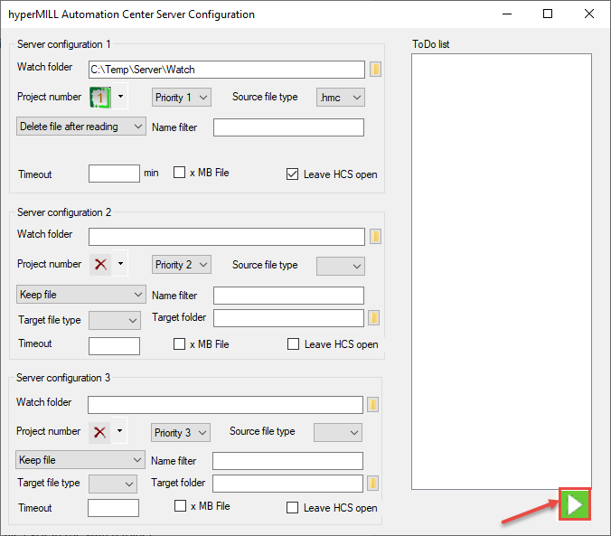
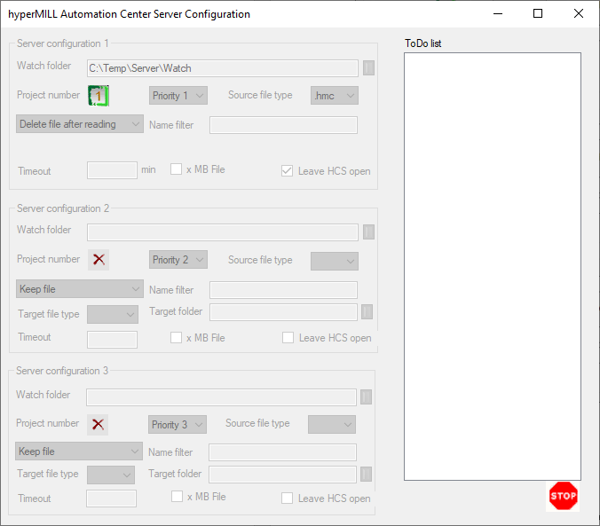

Operating the AUTOMATION Center on a server
The AUTOMATION Center can be run easily on a server. The script must be adapted so that there is no user interaction, otherwise the application will fail. It is very important to know that the application only monitors one folder and executes a script that has been defined beforehand. Every action such as ‘save file’, ‘log message’, ‘error’ must be managed in the script. The application only executes what has been requested.
All files can be found in C:\Program Files\OPEN MIND\hyperMILL\[version]\addins\hmAutoColor.
Configuring the PW Server (PWserver.exe)
An executable file must be defined:
Watch folder
Project number (script to be executed)
Priority
File type
The Watch folder must be a folder that is accessible to all clients and the server.
Count of sessions to use: Start the specified number of instances of hyperMILL® in parallel from the server.
Configuring the PW Monitor (PWMonitor.exe)
The PW Monitor can be used to display some information to the client during the process. The log file must have the extension *.PWlog. The PW Monitor is started by the client.
The script manages everything that is entered into the PW Monitor and when it is entered.
Starting the application on the server (PWserverStart.exe)
The application can run on the server. The PWserverStart.exe file must be executed on the server in order to run.
The application can be started in the following order:
:
 
This application window is now started:
The application is now running:

When a client copies a file to the Watch folder, the application is executed.
Starting the application from the client (PWserverStart.exe)
The server application can be started directly from the client. The Start script on server function can be used exactly where the server needs to be started.
Batch mode
If a message window appears during the process, the application is stopped. To avoid this problem, the Batch mode function can be used. It skips all message windows.
Define server mode
Manage the status of the PW Server Monitor.
The status to be displayed here can be set with the Define server mode function.
Use this function in the script whenever the status is to be changed.